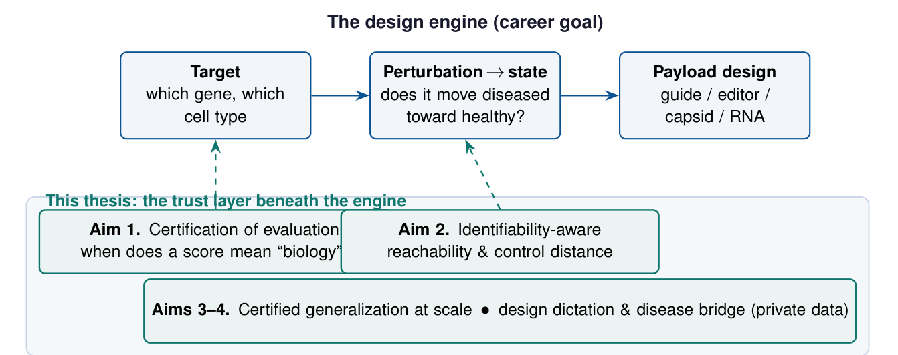

The goal
Genetic medicine has crossed from promise into approved therapy. The rate-limiting step is no longer whether we can edit or deliver, but deciding what to do: which gene, in which cell type, perturbed in which direction, will move a diseased cell toward health, and how to build the molecular agent that effects it.
Each of those is a prediction-and-design problem over cellular state. The long arc of this work is the engine that answers them: a system that selects a cell-type-specific target, predicts how a perturbation moves a cell from a diseased to a healthy state, and helps design the guide, editor, capsid, or RNA payload that realizes it.

Takeaway The career-scale goal is a computational design engine for programmable in-vivo genetic medicine; this program builds its trustworthy brain first.
Why trust is the bottleneck
A design engine that confidently proposes the wrong target is worse than no engine: it sends a wet laboratory down a months-long, costly dead end. So the binding constraint on programmable genetic medicine is not predictive firepower. It is trust: knowing when a model's prediction reflects biology rather than an artifact of batch structure, selection, or the metric used to score it.
In the last year this stopped being a philosophical worry and became a public, unresolved controversy. Across foundation and deep models, one prominent result reported that none outperformed deliberately simple linear baselines at predicting transcriptional responses. A rebuttal argued the opposite, that the negative result was an artifact of poorly calibrated metrics. A third line of work showed that standard metrics are inflated by systematic variation. A community challenge drawing more than 1,200 teams concluded that models do not yet consistently beat naive baselines, and that scaling alone is insufficient.
Takeaway The field's true bottleneck is trust, and its loudest disagreement about model quality is really a disagreement about what the metrics identify.
The thesis
The trustworthiness of a virtual cell is governed by identifiability. A prediction, a benchmark score, or a proposed cell-state intervention is meaningful only to the extent that the quantity it estimates is recoverable from the data and the design at hand.
The program makes certifiability of evaluation a formal object and builds the instrument that certifies it, then carries the same lens from the evaluation to the intervention, and finally uses the resulting theory to dictate which experiments, and therefore which laboratories' data, can resolve what public data cannot.
A model that confidently proposes the wrong target is worse than no model.the through-line of this work
Four aims on a compute ladder
The program proceeds in four aims along a deliberate compute-and-data ladder. Each rung produces a self-contained result and earns the next: single-GPU theory and diagnostics demonstrate capability, certified generalization justifies heavy compute, and the identifiability theory itself names the unique experimental designs, and therefore the laboratories, required for the final ascent.
Single GPU, public data
Formalize certification, and a first reachability metric.
Heavy compute, giga-scale atlases
Certified generalization where scaling alone plateaus.
Private, unique data
The experiments and platforms only certain labs can generate.
Aim 1. Certification of evaluation. Treat each evaluation metric as a functional of the predicted, true, and control distributions, and state the assumptions under which it identifies a biological effect rather than a confound. The deliverable is an open, scverse-compatible certification layer: matched nulls calibrated to a dataset's batch structure, an adversarial confound-decoder that quantifies how much batch or selection identity leaks into a model's predicted effect, and an on-manifold score that flags when a predicted state lies off the data manifold. The aim is to dissolve the baseline controversy by showing the competing conclusions are recoverable under different, explicit assumptions rather than genuinely contradictory.
Aim 2. Identifiability-aware reachability, the keystone. This aim carries the identifiability lens from the evaluation to the intervention: certifying when a predicted diseased-to-healthy transition is genuinely reachable by an admissible perturbation, rather than an artifact of confounded data. The fusion it proposes, a measure of controllability shipped together with a certificate of when that measure is trustworthy, is, to my knowledge, absent from current work, and it is where the defensible originality of the thesis sits.
Aim 3. Certified generalization. The community challenge concluded that scaling alone is insufficient and called for thoughtful integration of biological priors. The distinct angle here is to regularize with causal-structure and identifiability constraints suited to the partial-intervention reality of real screens, and to judge the result with the Aim 1 certificate: a certified out-of-distribution gain over a no-change baseline and a matched null, not a raw leaderboard number. A single-GPU proof of concept would train an identifiability-regularized model on public Perturb-seq data; the heavy-compute scale-up would test whether the constraint preserves certified generalization at the scale where pure scaling plateaus.
Aim 4. Design dictation and the disease bridge. A formal identifiability account has a powerful corollary: it specifies which experimental designs would make a currently-unidentifiable effect certifiable. This is the established logic of optimal experimental design, here applied to evaluation and reachability. The aim would apply the NullState framework to disease organoid atlases to characterize aberrant states and define identifiable healthy targets, and would derive, for a target effect class, the minimal design (an allele or dose series, multiple genetic backgrounds, paired pre and post or in-vivo measurement) that renders it certifiable.
Takeaway The theory does double duty: it certifies models, and it names the experiments, and the labs, that resolve what public data cannot.
What the completed work already proves
The methods this program scales are not hypothetical. NullState, the completed single-author study, already deploys the core machinery at the scale of a 1.8-million-cell organoid atlas: it separates biological signal from a pervasive confound, recovers relative geometry where a clean per-cell coordinate is undefined, and states an explicit identifiability boundary for when latent calibration without anchoring is attainable at all.
That is precisely the signature this program generalizes, from organoids to the virtual cell: separate signal from confound, state the boundary, defend the negative. The program's central execution risk, that the machinery works at atlas scale, is therefore already retired by completed work.
Epistemic status
This is a proposal. The definitions are intended to be made precise and the propositions proved or refuted; several works it builds on are preprints that may evolve, and the evaluation-rigor literature underlying Aim 1 is contested and fast-moving. The claim of genuinely unclaimed territory is made for Aim 2's fusion of controllability with a certificate, not for Aim 1.
The program is deliberately structured so that each aim yields a result even if a more ambitious conjecture, or a competitor's formalization, arrives first. It is a plan of work, presented here as a direction rather than a set of findings.